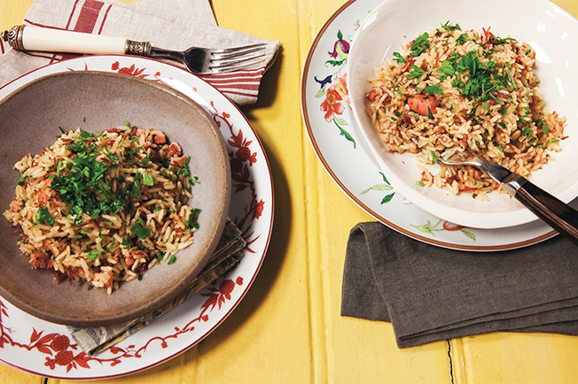

Arroz de Carreteiro

Ingredients
- 2 cups rice
- 4 cups of water
- 100 g desalted and shredded beef jerky
- 250 g pepperoni sausage appetizer
- 70 g diced bacon
- 2 tablespoons of oil
- 1/2 onion
- 2 garlic cloves
- 2 bay leaves
- 1/2 cup parsley (fresh)
- freshly ground black pepper to taste
- 1 lemon (optional)
How to prepare
- Take a kettle with a little more than 4 cups (tea) of water to low heat. Peel and slice half an onion into thin half moons. Peel and finely chop the garlic cloves. Cut the sausage into 3 pieces diagonally.
- In a large pan, heat the oil over medium heat. Brown the bacon and pepperoni sausage for 5 minutes, stirring occasionally.
- Add the onion and sauté for 2 minutes, stirring constantly, until translucent. Add the garlic and mix for just 1 more minute.
- Add the dried meat, rice and bay leaves. Stir well for about 1 minute.
- Before you start sticking to the bottom of the pan, measure 4 cups (tea) of boiling water and water the rice. Mix well, scraping the bottom with a wooden spoon and partially cover the pan.
- Let it cook until the rice absorbs all the water, for about 20 minutes - to check if the water has dried, pierce the rice with a fork to see the bottom of the pan; if it's still wet, let it cook some more.
- Turn off the heat and keep the pan covered for 5 minutes so that the rice finishes cooking in its own steam. Meanwhile, wash, dry and finely chop the parsley.
- Serve next with chopped parsley and freshly ground black pepper to taste. It goes great with lemon drops.
Source: Panelinha.com.br
Back to home